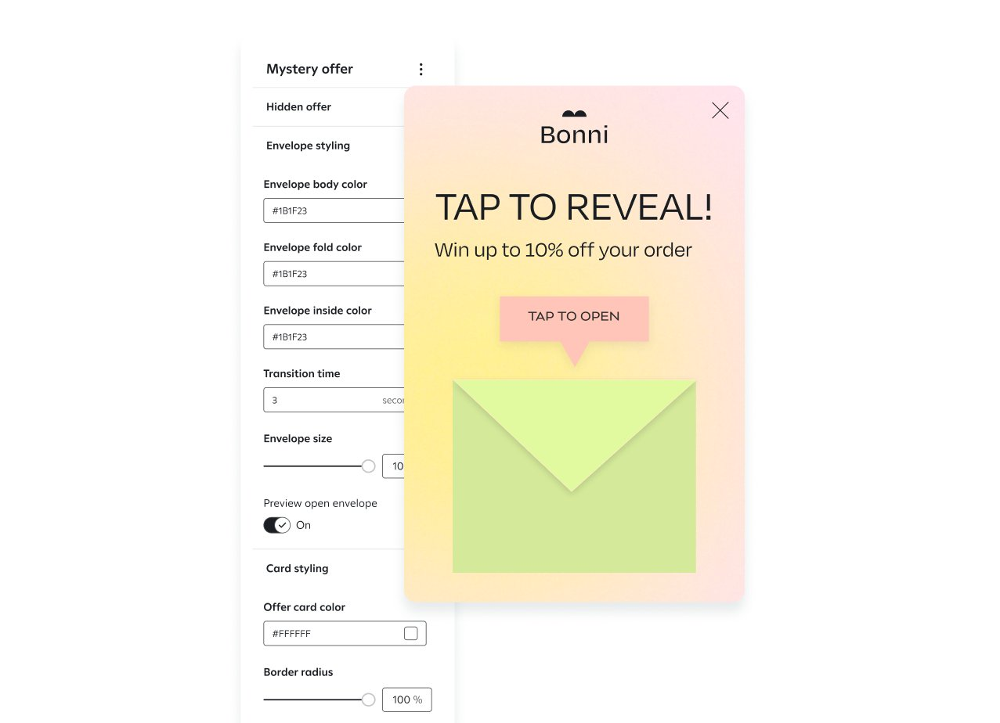
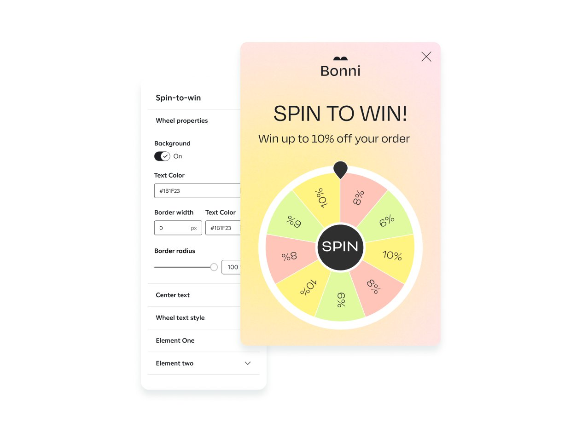
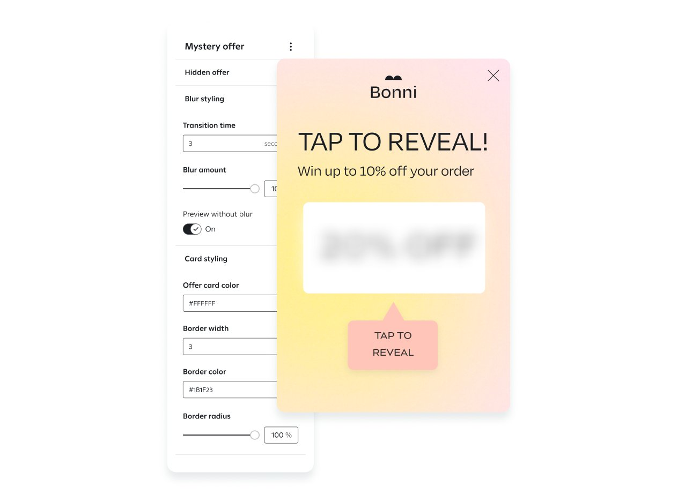
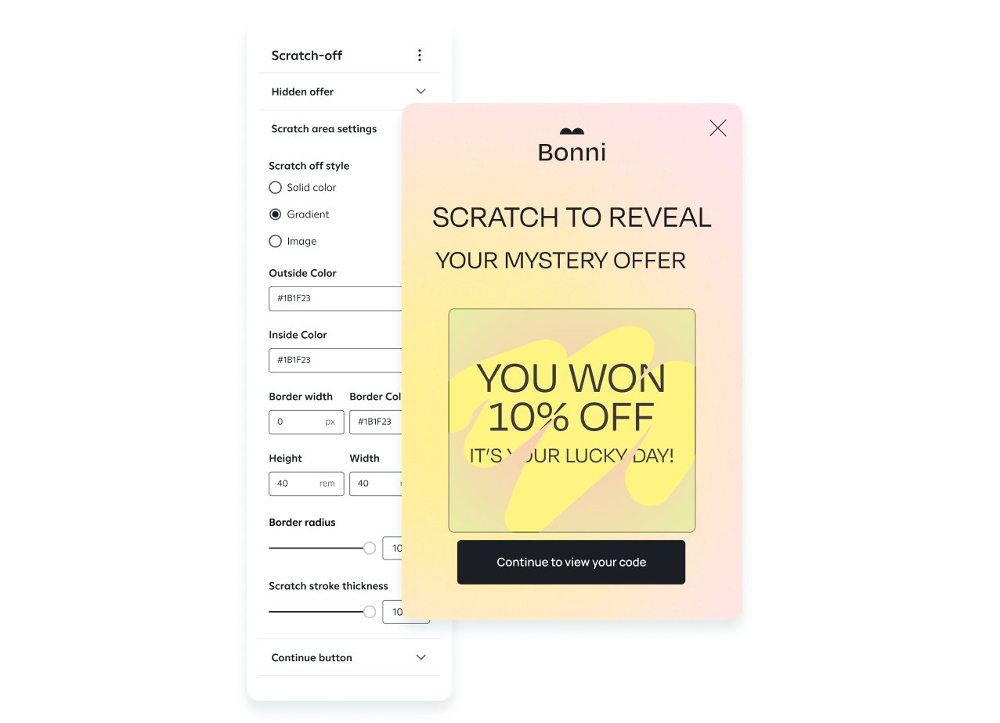
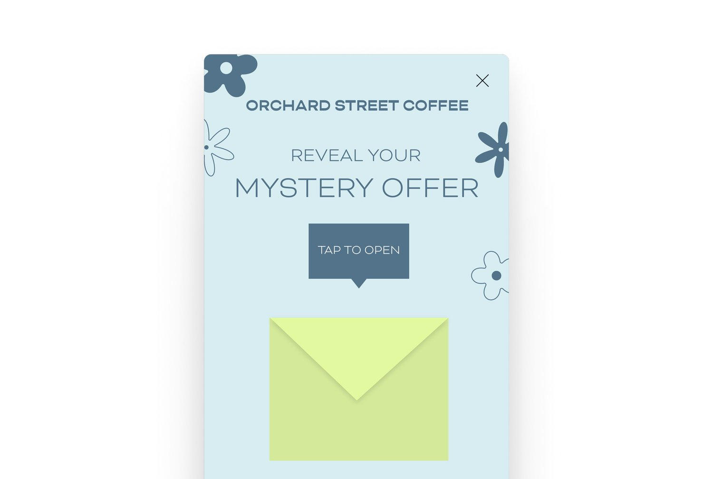
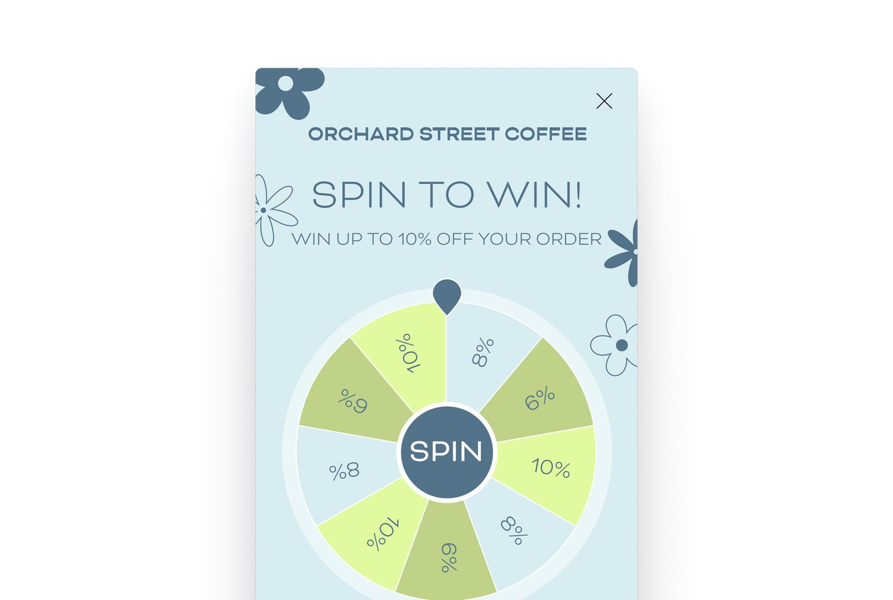
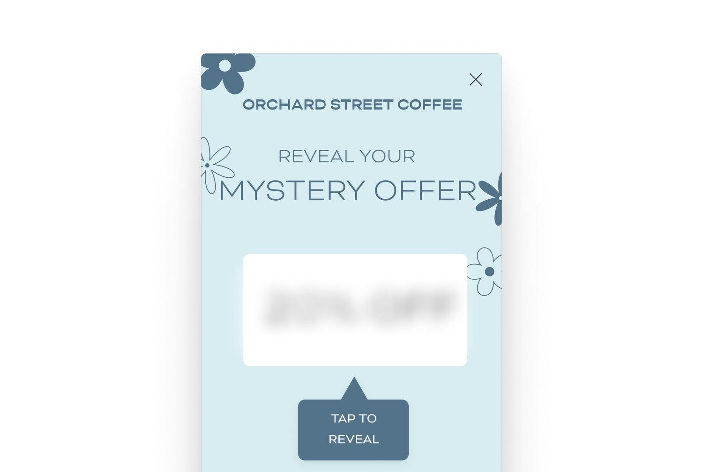
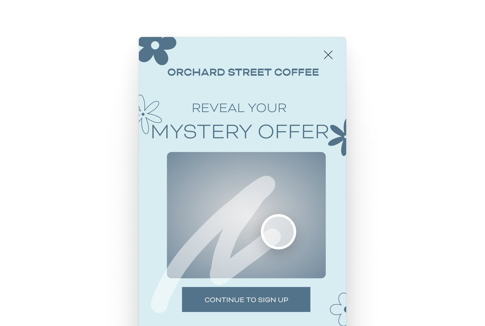
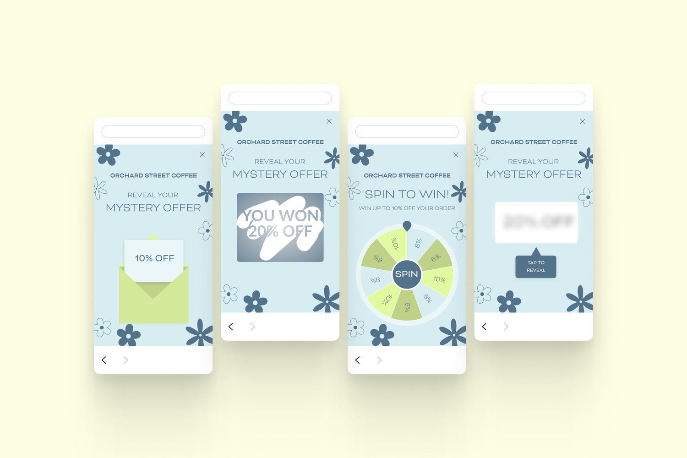

Overview
Standard sign-up units ask for an email or phone number and offer a discount. This project let clients pick from a library of interactive templates instead, turning sign-up into an experience that invites participation and lifts engagement and conversion.
The templates
Tap to reveal
Shoppers tap an envelope to uncover their offer. The moment of discovery builds anticipation and makes sign-up memorable.

Spin to win
Shoppers spin a wheel for a chance at an exclusive offer. It became the most popular template and inspired the rest of the set.

Blur
The most customizable template: brands shape the background with their own shapes, images, and styles to match their identity.

Scratch off
A lottery-style card shoppers scratch to reveal their offer. Brands choose the imagery for both the scratch area and the background.

The design journey
Each template had to feel playful for shoppers while staying easy for brands to customize. Spin to win proved the idea; its popularity led us to build tap to reveal, blur, and scratch off.





Business impact
Gamified units gave brands a more engaging way to grow their lists, supporting higher conversion, client revenue, and retention, and positioning Attentive as a leader in interactive sign-up experiences.
- 60%
- of clients adopted the gamified templates